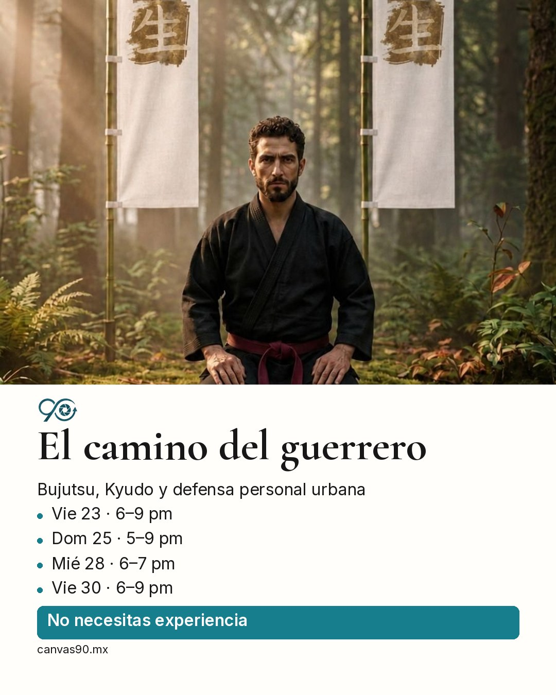
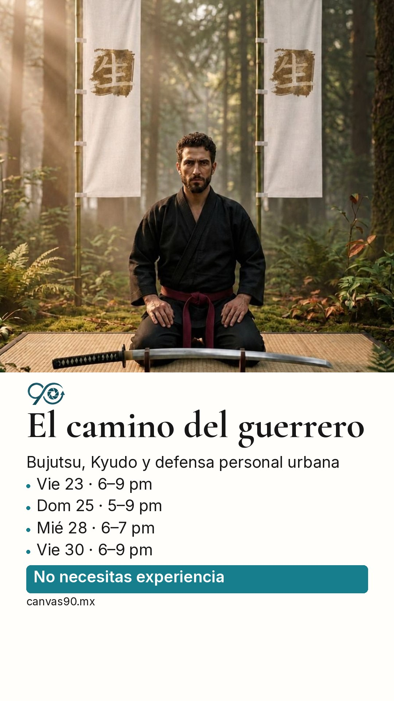

Canvas 90
El camino del guerrero
1. Copia el texto · 2. Comparte la imagen · 3. Pega el texto
Post 4:5

Descargar imagen
Historia 9:16

Descargar imagenCanvas 90
1. Copia el texto · 2. Comparte la imagen · 3. Pega el texto

Descargar imagen
Descargar imagen